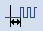

This is where you check when you will hear the buzzer.
Error: If this selection box is activated, a beep sounds every time a fault occurs.
Operation required: There is no error but user intervention is necessary (e.g. plates must be loaded to the tray or a plate must be inserted manually).
Info: An info announces a problem which will arise at a later stage.
Confirmation: A beep confirms a finished action (e.g. a printing plate was loaded).
Delay

This is where you enter the delay time (in seconds) after which the buzzer should sound when a message displays.
Duration
This is where you enter the maximum time (in seconds) you will hear the buzzer. The buzzer will not switch off if you enter a "0" in this box.
Brightness
Use the slider to set how bright the status symbols will appear on the Suprasetter A52/A74/A75.
Apply
The settings are sent to the recorder and enabled when you click "Apply".
Cancel
Your last inputs are undone by clicking "Cancel" unless the "Apply" button was clicked.